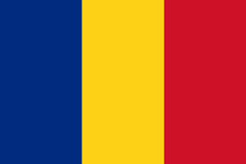
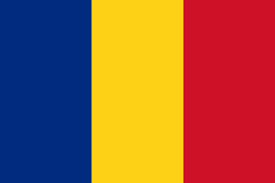

Acasă
Mail
Știri
Sport
Flickr
Answers

Acasă
Mail
Știri
Sport
Flickr
Answers

Ne-am întalnit in mare liniște, aproximativ șase luni înainte de a deveni știre, și am lucrat în tot acel timp, și singurul lucru care s-a schimbat a fost percepția oamenilor.
Federer a fost eliminat de australianul Kokinakis, care l-a învins în trei seturi, însă elveţianul a ridicat publicul în picioare. În timpul unui schimb de mingi, elveţianul a avut o execuţie inedită.
Christina Aguilera nu a fost niciodată discretă cu machiajul ei. Rujurile în nuanțe intense de roșu și violet sunt ca și marca ei personală, și să nu uităm de eyelinerul extrem de evident.
Naţionala Argentinei nu a mai câştigat niciun trofeu de 25 de ani, mai precis din 1993, când pumele au cucerit Copa America, iar pe umerii lui Messi este o presiune fantastică.
Două meciuri a jucat Simona la Miami. A câştigat destul de greu jocul cu Oceane Dodin, în turul al doilea, şi a pierdut în faţa Agnieszkăi Radwanska în urnda următoare.
Acest meci a pus capăt sezonului de hard, care a început în ianuarie, la Shenzhen, şi se va încheia la Miami. După acesta, jucătoarele de top intră într-o vacanţă de aproape o lună, urmând a reveni în competiţii în aprilie, la final, la Stuttgart.